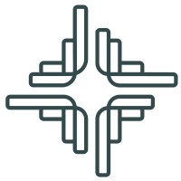

Tara Holding withProject kick-off, Thursday 15 October 2026
Odoo 19 Upgrade & Urban Eats Implementation
Prepared by Code-ox Technologies, Odoo Silver Partner. Purchase Order TH P00008.
Today’s agenda
- 01Why we are here today
- 02What we are delivering
- 03The road to 1 January
- 04Phases, timeline and milestones
- 05The first two weeks
- 06Our team and how to reach us
- 07How we work together
- 08What we need from Tara Holding
- 09Decisions, risks and go-live
- 10Next steps
Why we are here today
The goal: Tara Holding upgraded to Odoo 19 and Urban Eats running on Odoo from 1 January 2027, on a platform your own team can run with confidence.
Start the project
Officially begin the work, with the agreement signed and the advance invoiced.
Align on the plan
Walk through the phases, dates and milestones so both teams share one picture.
Confirm who does what
Name the people, owners and escalation path on both sides.
Agree the first inputs
Access, information and decisions Tara Holding provides in the first two weeks.
What we are delivering
Part 1
Odoo 18 to 19 upgrade
All six companies move to Odoo 19 in the same database, with history intact.
- Assessment and module-by-module register
- Upgrade validated on staging first
- Finance sign-off for each company
- Production upgraded outside working hours
Part 2
Urban Eats / MYLK on Odoo 19
- Urban Eats as one company, with Brand, Branch and Channel reporting
- Main Warehouse, Central Kitchen and outlet stock
- Products, recipes and central kitchen production
- Restaurant POS and Kitchen Display per branch and brand
- Delivery platforms through UrbanPiper (Option B)
- Settlement and platform reconciliation
- Paymob, Tabby, Tamara and POS terminals
- ZATCA Phase 2
- WhatsApp, loyalty and promotions
- Foodics exit with a full data archive
Included after go-live: two weeks of hypercare, the Foodics archive, source and documentation handover, and support until 30 June 2027.
The road to 1 January
The two committed dates hold if access, inputs and UAT feedback arrive on time and the delivery platforms approve their connections.
05 / 18Five phases
Mobilise, design & upgrade
15 Oct – 12 Nov
Agreement and access, requirement workshops, staging upgrade, finance sign-off and the production upgrade.
Build Urban Eats
1–30 Nov
Foundation, central kitchen, POS and Kitchen Display, platforms, payments, ZATCA, data loads and internal testing.
UAT & training
1–24 Dec
Two UAT cycles, role-based training, cutover rehearsal and UAT acceptance.
Cutover & go-live
27 Dec – 1 Jan
Production deployment, Go / No-Go, cutover night on 31 December and go-live on 1 January.
Hypercare & SLA support
1 Jan – 30 Jun
Weekend cover, two weeks of hypercare, handover on 14 January, then support to 30 June 2027.
Timeline
Seventeen workstreams across thirteen weeks, 15 October 2026 to 14 January 2027.
Fifteen milestones
- M0Thu 15 Oct 2026Agreement signed & kick-off held
- M1Thu 29 OctSRS signed; assessment, module register & architecture approved
- M2Thu 29 OctUpgrade signed off on staging (six companies)
- M3Weekend 6–7 NovProduction upgraded to Odoo 19
- M4Thu 12 NovUrban Eats foundation configured
- M5Thu 26 NovCentral kitchen, POS & payments ready
- M6Thu 26 NovDelivery platforms connected in test
- M7Mon 30 NovInternal testing complete; data loaded
- M8Tue 1 Dec 2026Production-ready UAT environment live
- M9Thu 24 DecUAT acceptance
- M10Tue 29 DecGo / No-Go
- M11Thu 31 Dec (night)Cutover complete: Foodics closed for transactions
- M12Fri 1 Jan 2027Production go-live: all outlets on Odoo POS
- M13Thu 14 JanSource & documentation handed over
- M14Wed 30 Jun 2027Six-month support ends
Gold marks the two committed dates.
08 / 18The first two weeks
15 to 29 October: access, staging upgrade, workshops and the signed SRS.
| When | Task | Owner |
|---|---|---|
| Thu 15 Oct | Agreement signed, advance invoiced, kick-off held | Both teams |
| Thu 15 Oct | Odoo.sh, staging and GitHub access | Tara IT |
| Thu 15 Oct | Full production backup; staging branch created | Code-ox |
| 15–18 Oct | Staging copy upgraded to Odoo 19 | Code-ox with Odoo |
| 15–22 Oct | Upgrade assessment and module register | Code-ox |
| 15–22 Oct | Foodics console and API access; data inventory | Tara IT, Code-ox |
| 18–21 Oct | Studio customisations and third-party modules checked | Code-ox |
| 18–26 Oct | Requirement workshops, two hours each | Both teams |
| by 22 Oct | Joint Odoo and UrbanPiper meeting on platform coverage | Tara Holding |
| 21–27 Oct | Validation of every company and department on staging | Tara Finance, departments |
| 25–27 Oct | Software Requirements Specification prepared | Code-ox |
| Thu 29 Oct | SRS signed; finance sign-off for each company | Tara Holding |
Our team
One point of contact for Tara Holding, a project manager with three developers, and founder-level oversight.
Tara Holding
How to reach us
+966 561 765 707
+966 535 716 437
Start with Raghib for anything at all. If something needs more weight, it moves up one step at a time.
11 / 18How we work together
Status report
Every Thursday
Per workstream: on track, at risk or late; done, next, risks, Tara actions due
Steering review
29 Oct, 12 Nov, 26 Nov, 10 Dec, 24 Dec
Milestones, risks, decisions, change requests
Live tracker
Always
Code-ox Odoo Project: tasks, dates, dependencies, Gantt; Helpdesk for UAT defects and support tickets
Requirements and changes
SRS signed 29 October
The signed SRS is the agreed scope. Every change is assessed for scope, cost and dates, approved in writing and recorded as a new SRS revision. Code freeze starts on 24 December.
What we need first
Inputs due by 29 October. There are 25 in total, all listed in the Project Plan; a late input moves the tasks that depend on it.
| Due | Input from Tara Holding | Owner |
|---|---|---|
| Thu 15 Oct | Signed agreement and advance payment | Sponsor |
| Thu 15 Oct | Executive sponsor, project owner and key users named per area | Sponsor |
| Thu 15 Oct | Odoo.sh, staging and GitHub access for Code-ox | IT |
| Thu 15 Oct | Licences and source of third-party modules | IT |
| 15–22 Oct | Foodics items F1–F9 | IT, Operations |
| Thu 22 Oct | Requirement questionnaires answered per area | All leads |
| Thu 22 Oct | UrbanPiper order and platform merchant accounts; payout samples | Operations |
| Thu 22 Oct | Finance validator per company; validation checklist input | Finance |
| Thu 22 Oct | Outlet list: brand, address, hours, devices, platform store IDs | Operations |
| Thu 22 Oct | Repository for custom code in Tara’s name | IT |
| Thu 29 Oct | Urban Eats CR, VAT, address, accounts, banks | Finance |
| Thu 29 Oct | SRS reviewed and signed by the Project Owner | Owner |
Decisions calendar
Fifteen decisions, each due before the work that depends on it.
Thu 15 Oct
- D-01 Delivery layer confirmed: Option B, UrbanPiper
Thu 29 Oct
- D-02 POS revenue tagging: Option 1 standard or Option 2 module
- D-03 Production upgrade window: 6–7 Nov or 31 Dec
- D-04 Treatment of each third-party module, incl. MCP replacement
- D-05 Product categories, naming and coding
- D-15 Go-live on Fri 1 Jan confirmed, with outlet and support cover named for Fri 1–Sat 2 Jan
Thu 5 Nov
- D-06 POS terminal provider: Geidea, NearPay, Paymob
- D-10 Labour and overhead in production cost
- D-14 Apple Pay route on the website
Thu 12 Nov
- D-07 Loyalty and promotion programs
- D-08 Kitchen / delivery status messages on WhatsApp
- D-09 Settlement automation level
Thu 26 Nov
- D-11 Training languages and format
Thu 24 Dec
- D-12 Foodics end date
Tue 29 Dec
- D-13 Go / No-Go
Risks we are watching
Reviewed every week, so nothing surprises either team.
Delivery platform coverage
Odoo’s UrbanPiper list does not include ToYou or The Chefz today. Coverage is confirmed in the joint meeting by 22 October; any platform not covered stays on its tablet or gets a direct connector.
Tara Holding and UrbanPiperSix companies validated in one week
Before-and-after reports are prepared in advance, so finance reviews only the differences.
Both teamsRecipes rebuilt from the start
Foodics holds no recipes. Templates arrive on day one, recipe workshops run in weeks two and three, top sellers first.
Tara HoldingData Foodics cannot export
A gap report by 22 October, so the approach for anything missing is agreed early.
Code-oxDevices or network late
Specification on 29 October, devices on site by 19 November, pilot test from 24 to 26 November.
Tara HoldingLate scope changes
Every change goes through change control against the signed SRS. Code freeze starts on 24 December.
Both teamsGo-live and support
Go / No-Go
Checklist signed by both sides
Cutover night
Final Foodics export and stock count
Go-live
Every outlet on Odoo POS
Weekend cover
Code-ox team on call
Hypercare
Two weeks of close support
Handover
Source code and documents
From 1 January all outlets use Odoo POS only. Foodics stays read-only until the archive is verified. Support runs until 30 June 2027.
16 / 18Next steps
- 01TodayAgreement signed and kick-off heldBoth teams
- 02TodayOdoo.sh, staging and GitHub access grantedTara IT
- 03TodayExecutive sponsor, project owner and key users namedTara Holding
- 0415–18 OctBackup and staging upgrade to Odoo 19Code-ox
- 05From 18 OctRequirement workshops beginBoth teams
- 06By 22 OctQuestionnaires, Foodics items, outlet list and merchant accountsTara Holding
- 0729 OctSRS signed; upgrade signed off on stagingTara Holding
Thank you
Let’s begin.
Questions, now or at any point: Raghib is your first call.